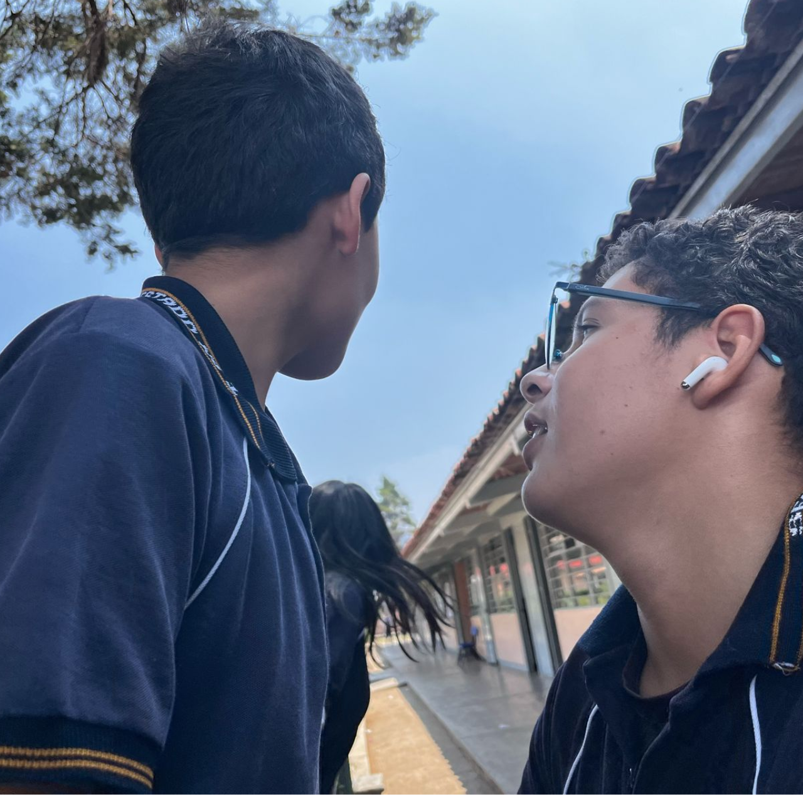
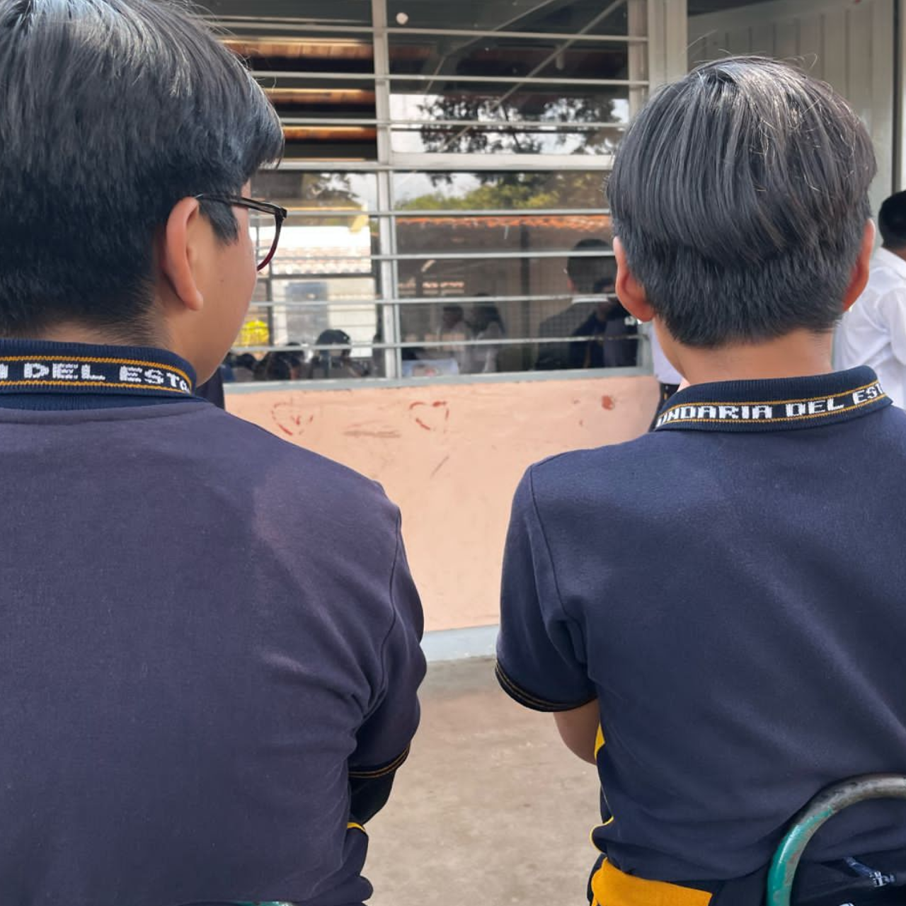
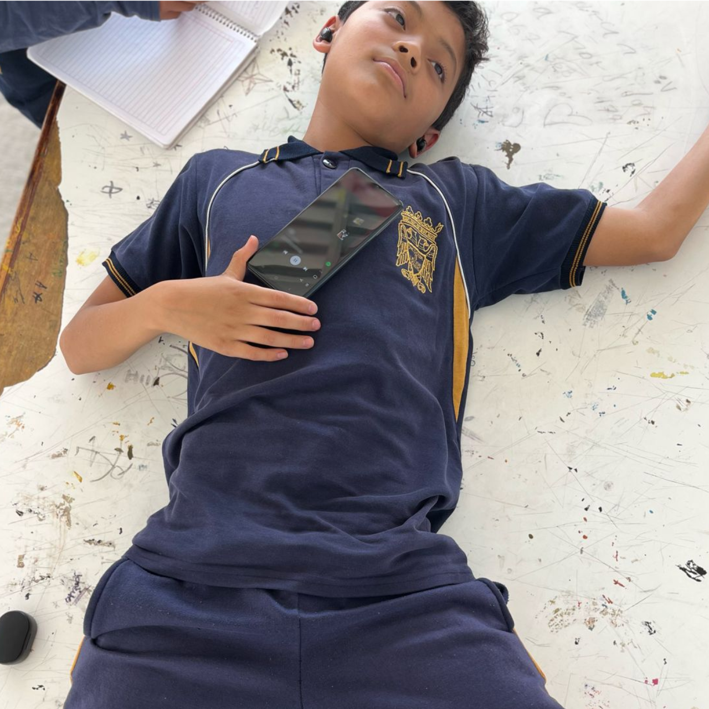

<!DOCTYPE html>
<html lang="en">
<head>
    <meta charset="UTF-8">
    <meta name="viewport" content="width=device-width, initial-scale=1.0">
    <title>Padres resonsables hijos con nesecidades</title>
    <link rel="stylesheet" href="style.css">
</head>
<body>
  

</body>
</html>
<header class="titulo">
  <h1>Padres Responsableshijos con necesidades</h1></header>
  <header class="informacion">
  
  <h2>  "Padres Responsables" </h2><p>es un concepto crucial que implica un <br>
    compromiso integral de los padres hacia el bienestar y desarrollo de sus hijos.<br>
     Ser un padre responsable va más allá de proporcionar las necesidades básicas; <br>
     incluye asegurar una educación de calidad, <br>
     ofrecer apoyo emocional constante, y establecer normas y valores claros.<br>
      La provisión de alimentos nutritivos, un hogar seguro y atención médica adecuada <br>
      son fundamentales para el crecimiento físico saludable. <br>
      <br>
    La educación es otro pilar esencial, donde los padres deben<br>
     involucrarse activamente en el aprendizaje de sus hijos, <br>
     fomentando un entorno que estimule la curiosidad y el amor <br>
     por el conocimiento. Además, el apoyo emocional es vital para desarrollar <br>
     una autoestima saludable en los niños, ayudándolos a enfrentar desafíos con resiliencia.<br>
     <br>
    La disciplina y la enseñanza de valores éticos y morales preparan a los hijos<br>
     para tomar decisiones responsables y ser buenos ciudadanos. Promover hábitos<br>
      de vida saludables, como una dieta equilibrada y ejercicio regular,<br>
       es igualmente importante, al igual que enseñar medidas de <br>
       seguridad para proteger a los hijos de peligros.<br>
       <br>
    Finalmente, fomentar habilidades sociales y mantener una comunicación abierta y <br>
    efectiva asegura que los niños crezcan en un ambiente amoroso y comprensivo.<br>
     En resumen, ser un padre responsable significa estar<br>
     comprometido con el desarrollo integral de los hijos en todos los aspectos de sus vidas.<br></p>
     <br>




   <h3>"Padres Irresponsables" </h3> <p>se refiere a aquellos que no cumplen adecuadamente con <br>
     sus deberes y responsabilidades hacia sus hijos, lo que puede afectar negativamente su <br>
      bienestar y desarrollo. Estos padres a menudo fallan en proporcionar las necesidades <br>
       básicas como alimentación, vestimenta, y atención médica adecuada <br>. Además,
        pueden no estar involucrados en la educación de sus hijos, lo que resulta <br>
         en un apoyo insuficiente para su aprendizaje y crecimiento intelectual. <br>
         <br>
    Los padres irresponsables también pueden carecer de la capacidad o disposición <br>
     para ofrecer apoyo emocional, lo que deja a los niños sin un entorno de amor <br>
      y comprensión necesarios para una autoestima saludable. La falta de disciplina <br>
       efectiva y la ausencia de valores claros pueden llevar a comportamientos <br>
        inadecuados y problemas de conducta en los hijos.  <br>
        <br>
    Asimismo, estos padres pueden descuidar la salud y bienestar de sus hijos, <br>
     no fomentando hábitos de vida saludables ni proporcionando la orientación <br>
      necesaria para evitar peligros físicos y emocionales. La falta de habilidades  <br>
      de comunicación abiertas y efectivas también puede resultar en una desconexión <br>
       emocional entre padres e hijos. <br>
       <br>
    En resumen, los padres irresponsables no logran cumplir con los aspectos cruciales  <br>
    del cuidado y la crianza, poniendo en riesgo el desarrollo integral y el bienestar de sus hijos. <br></p>





   <br>
   <h4>Historia de un Padre Ejemplar y uno Irresponsable
  </h4><p>
    En una ciudad tranquila, vivían dos familias vecinas,<br>
     cada una con una historia muy diferente sobre la crianza de sus hijos.<br>
      Esta es la historia de Carlos, un padre ejemplar, y Roberto, un padre irresponsable.<br>
      <br>
    Carlos era un hombre trabajador y dedicado. Desde el nacimiento de su hijo,<br>
     Lucas, se comprometió a ser un padre presente y amoroso. Carlos y su esposa,<br>
      Mariana, se aseguraron de que Lucas creciera en un hogar lleno de amor,<br>
       respeto y seguridad. Carlos tenía un empleo estable y siempre priorizaba<br>
        las necesidades de su familia. Todos los días, se levantaba temprano<br>
         para preparar el desayuno y acompañar a Lucas a la escuela,<br>
          asegurándose de que estuviera bien alimentado y listo para aprender. <br>
          <br>
    En las tardes, Carlos ayudaba a Lucas con sus tareas escolares,<br>
     fomentando el amor por el aprendizaje y la curiosidad.<br>
      No solo se preocupaba por la educación académica de Lucas, <br>
      sino también por su desarrollo emocional.<br>
       Carlos era un gran oyente; siempre tenía tiempo para escuchar <br>
       los problemas y preocupaciones de su hijo, ofreciéndole consejos y apoyo incondicional. <br>
       En su tiempo libre, Carlos llevaba a Lucas al parque,<br>
        donde jugaban al fútbol y disfrutaban del tiempo al aire libre.<br>
         También se involucraba en actividades comunitarias y enseñaba <br>
         a su hijo la importancia de ayudar a los demás y ser un buen ciudadano.<br>
         <br>
    Carlos inculcaba en Lucas valores como la honestidad, <br>
    el respeto y la responsabilidad, no solo con palabras, <br>
    sino con acciones diarias. Era un modelo a seguir en términos de comportamiento y actitud. <br>
    Gracias a su guía y apoyo constante, Lucas creció siendo un niño seguro,<br>
     respetuoso y con una fuerte ética de trabajo.<br>
     <br>
    Por otro lado, Roberto, el vecino de Carlos, <br>
    tenía un enfoque completamente diferente hacia la paternidad. <br>
    A pesar de tener un empleo bien remunerado, Roberto rara vez pasaba tiempo con su hijo,<br>
     Javier.<br>
      Prefería pasar sus días libres con amigos o viendo televisión, <br>
      dejando a Javier al cuidado de su esposa, Ana, o a veces, solo. <br>
      La falta de atención y supervisión afectó gravemente el desarrollo de Javier. <br>
      Sin una figura paterna presente, Javier se sentía desatendido y <br>
      buscaba atención de maneras negativas.<br>
      <br>
    Roberto no se preocupaba por la educación de Javier; nunca asistía a las<br>
     reuniones escolares ni se interesaba por sus calificaciones. <br>
     Javier a menudo iba a la escuela sin haber hecho sus tareas,<br>
      y su rendimiento académico empezó a declinar. Además,<br>
       Roberto no establecía normas ni límites claros, <br>
       permitiendo que Javier hiciera lo que quisiera. <br>
       Sin una guía adecuada, Javier desarrolló comportamientos problemáticos<br>
        y comenzó a juntarse con amigos que lo influenciaban negativamente.<br>
        <br>
    La falta de apoyo emocional también afectó a Javier. <br>
    Sentía que no podía contar con su padre para hablar de sus problemas o emociones. <br>
    Esto lo llevó a tener una baja autoestima y a sentirse aislado.<br>
     Ana, aunque hacía lo mejor que podía, no lograba llenar el vacío dejado por la ausencia de Roberto. <br>
     Javier no tenía una figura masculina positiva que lo guiara y lo apoyara, lo que afectó su desarrollo social y emocional.<br>
     <br>
    La vida en casa de Roberto estaba marcada por la falta de comunicación y el desinterés. <br>
    Las discusiones eran frecuentes y la falta de unidad familiar era evidente. <br>
    Mientras tanto, la familia de Carlos prosperaba. Lucas crecía rodeado de amor, <br>
    apoyo y guía constante, lo que le permitió desarrollar todo su potencial.<br>
     Javier, en cambio, luchaba con problemas de comportamiento y dificultades académicas, <br>
     reflejo del descuido y la irresponsabilidad de su padre.<br>
     <br>
    Con el tiempo, las diferencias en la crianza de Carlos y Roberto se hicieron más evidentes. <br>
    Lucas se convirtió en un joven exitoso, seguro de sí mismo y respetado por sus compañeros.<br>
     Javier, lamentablemente, siguió un camino más difícil,<br>
      enfrentando problemas académicos y personales debido a la falta de orientación y apoyo.<br>
      <br>
    La historia de Carlos y Roberto es un claro ejemplo de cómo la responsabilidad y<br>
     el compromiso en la crianza de los hijos pueden hacer una gran diferencia en sus vidas. <br>
     Carlos, el padre ejemplar, mostró que con amor, dedicación y presencia, <br>
     los padres pueden guiar a sus hijos hacia un futuro brillante y prometedor. <br>
     Roberto, el padre irresponsable, demostró que la falta de atención y cuidado<br>
      puede tener consecuencias negativas duraderas en el desarrollo de los hijos <br></p>
      <h5>Hijos con Necesidades
      </h5><p>
        Los hijos con necesidades representan una realidad significativa<br>
         y compleja en la sociedad contemporánea.<br>
          Estos niños pueden enfrentar una variedad de desafíos físicos,<br>
           intelectuales, emocionales o del desarrollo,<br>
            que requieren una atención y un apoyo adicional para alcanzar su máximo potencial.<br>
             Es esencial comprender la importancia de proporcionar un entorno inclusivo y de apoyo,<br>
              tanto en el hogar como en la comunidad, para estos niños.<br>
              <br>
        En primer lugar, los padres de niños con necesidades especiales a menudo se encuentran en <br>
        una situación de demanda constante y multifacética.<br>
         La crianza de estos hijos requiere no solo amor y paciencia, sino también una serie de habilidades<br>
          y conocimientos especializados. Los padres deben convertirse en defensores incansables de sus hijos, <br>
          navegando por sistemas educativos, médicos y de servicios sociales que a menudo son complicados y burocráticos. <br>
          Además, deben aprender a equilibrar las necesidades especiales de su hijo con las demandas de la<br>
           vida diaria y las necesidades de otros miembros de la familia.<br>
           <br>
        La educación es uno de los aspectos más críticos en la vida de los niños<br>
         con necesidades especiales. Es fundamental que el sistema educativo sea<br>
          inclusivo y esté preparado para ofrecer las adaptaciones necesarias para cada niño.<br>
           Esto incluye la disponibilidad de maestros capacitados en educación especial,<br>
            la implementación de planes de educación individualizados (PEI),<br>
             y el acceso a recursos y tecnologías asistivas. Un entorno escolar<br>
              inclusivo no solo beneficia al niño con necesidades especiales,<br>
               sino que también enriquece la experiencia de todos los estudiantes,<br>
                promoviendo la empatía, la diversidad y la comprensión.<br>
        
        La inclusión social es otro componente vital. <br>
        Los niños con necesidades especiales deben tener oportunidades<br>
         para participar en actividades comunitarias, deportivas y recreativas. <br>
         La inclusión social no solo mejora la calidad de vida del niño, <br>
         sino que también ayuda a construir una comunidad más diversa y tolerante.<br>
          Es crucial que las instalaciones y los programas comunitarios sean accesibles<br>
           y estén diseñados para incluir a todos los niños, independientemente de sus capacidades.<br>
           <br>
        El apoyo emocional y psicológico es igualmente importante. <br>
        Los niños con necesidades especiales y sus familias a menudo enfrentan desafíos<br>
         emocionales significativos. Los sentimientos de aislamiento, <br>
         frustración y estrés pueden ser comunes. Por lo tanto, <br>
         es vital que las familias tengan acceso a servicios de apoyo psicológico y consejería. <br>
         Las redes de apoyo entre pares, donde las familias pueden compartir<br>
          experiencias y consejos, también son extremadamente valiosas.<br>
          <br>
        La sociedad en general tiene un papel crucial en la creación de un<br>
         entorno inclusivo para los niños con necesidades especiales.<br>
          Esto incluye la implementación de políticas públicas que apoyen la inclusión y el <br>
          acceso a servicios esenciales, así como la promoción de una actitud de respeto <br>
          y aceptación hacia la diversidad. La sensibilización y la educación pública pueden<br>
           ayudar a derribar las barreras sociales y los estigmas asociados con las necesidades especiales.<br>
           <br>
        En conclusión, los hijos con necesidades especiales requieren un enfoque <br>
        integral que abarque la educación, el apoyo emocional, la inclusión social<br>
         y el respaldo de la comunidad y las políticas públicas.<br>
          Proporcionar un entorno de apoyo y respeto no solo ayuda a estos niños a alcanzar su potencial, <br>
          sino que también enriquece a la sociedad en su conjunto, <br>
          fomentando una cultura de inclusión y aceptación.<br>
           Al reconocer y atender las necesidades únicas de estos niños, <br>
           podemos construir una comunidad más justa y compasiva para todos. <br></p>
          

           
          
           <h6>Historia de Fulanito: Un Niño en Busca de Apoyo</h6><p>
            <br>
            Fulanito era un niño de diez años que vivía en un pequeño<br>
             vecindario de una gran ciudad. A primera vista, <br>
             Fulanito parecía un niño común: jugaba con sus amigos en la calle, <br>
             tenía una imaginación vivaz y una curiosidad innata por el mundo que lo rodeaba.<br>
              Sin embargo, Fulanito enfrentaba grandes dificultades en la escuela.<br>
               Repetidamente, sus calificaciones eran bajas y a menudo reprobaba sus exámenes.<br>
                Sus maestros notaban su potencial, pero también veían que algo crucial faltaba en su vida.<br>
                <br>
            Los padres de Fulanito, Juan y Marta, estaban inmersos en sus propios problemas.<br>
             Juan trabajaba largas horas en un empleo mal pagado y Marta luchaba <br>
             contra una depresión que la mantenía mayormente ausente emocionalmente.<br>
              La combinación de estrés financiero y problemas de salud mental hacía <br>
              que la atención que Juan y Marta podían brindar a Fulanito fuera mínima. <br>
              En casa, a menudo había poca comida nutritiva, y la vivienda era caótica <br>
              y desorganizada. El ambiente no proporcionaba el espacio adecuado para<br>
               que Fulanito pudiera hacer sus tareas o estudiar.<br>
               <br>
            Cada mañana, Fulanito iba a la escuela sin haber desayunado adecuadamente, <br>
            lo que afectaba su concentración y energía. Los maestros intentaban ayudarlo, <br>
            pero sin el apoyo adecuado en casa, sus esfuerzos eran en vano. <br>
            Fulanito rara vez completaba sus tareas, y cuando lo hacía,<br>
             a menudo estaban incorrectas porque no tenía a nadie que lo guiara o ayudara.<br>
              Además, su bajo rendimiento escolar le provocaba una baja autoestima. <br>
              Se sentía tonto y fuera de lugar entre sus compañeros que parecían avanzar sin problemas.<br>
              <br>
            La situación emocional de Fulanito también era preocupante. <br>
            La falta de apoyo emocional de sus padres lo dejaba sintiéndose solo y no querido. <br>
            Las discusiones frecuentes entre Juan y Marta y la atmósfera tensa en casa hacían <br>
            que Fulanito se sintiera inseguro. Sin una figura que lo animara o le dijera que <br>
            podía lograr grandes cosas, Fulanito comenzó a creer que no tenía ningún valor ni futuro.<br>
            
            <br>
            <br>
            Un día, la maestra de Fulanito, la señora García, decidió intervenir.<br>
             Había visto a demasiados niños perderse en el sistema educativo por la<br>
              falta de apoyo en casa y no estaba dispuesta a permitir que eso le sucediera a Fulanito.<br>
               Ella habló con el director de la escuela y juntos contactaron a los servicios sociales. <br>
               Pronto, una trabajadora social, la señorita López, empezó a visitar a la familia de Fulanito.<br>
               <br>
            La señorita López se dio cuenta rápidamente de la situación en el hogar y <br>
            comenzó a trabajar con Juan y Marta. Les proporcionó recursos y orientación <br>
            para mejorar la estabilidad y la organización del hogar.<br>
             También ayudó a Marta a acceder a servicios de salud mental, <br>
             y a Juan a encontrar un empleo mejor remunerado y menos demandante.<br>
             Con el tiempo, las cosas en casa comenzaron a mejorar lentamente.<br>
             <br>
            Fulanito también recibió apoyo directo.<br>
             La escuela le proporcionó un tutor <br>
             que trabajaba con él después de clases para ayudarlo a ponerse <br>
             al día con sus estudios. Además, la señora García lo animaba constantemente, <br>
             reconociendo sus pequeños logros y recordándole su potencial. <br>
             Con este nuevo apoyo, Fulanito comenzó a ganar confianza.<br>
             Sus calificaciones empezaron a mejorar y, por primera vez, <br>
             se sintió orgulloso de su trabajo.<br>
             <br>
            La historia de Fulanito muestra cómo la falta de apoyo y atención en <br>
            el hogar puede afectar gravemente el desempeño escolar y el bienestar <br>
            emocional de un niño. Sin embargo, también destaca la importancia de la intervención <br>
             y el apoyo comunitario. Gracias a la intervención de la señora García y la señorita López, <br>
            Fulanito pudo recibir la ayuda que necesitaba para florecer. <br>
            Esta historia nos recuerda que, aunque los padres juegan un papel crucial en el<br>
             desarrollo de un niño, la comunidad y los profesionales también pueden marcar una<br>
              diferencia significativa. <br></p>
              
   
 <h6>¡PROCESO DE CREACION DE UNA PAGINA WEB!</h6>
 <P>Paso 1 <br>aprende el lenguaje de programacion html</P>
 
 <p>Paso 2 <br>comienza a programar</p>
 
 <p>Paso 3 <br>Encuentra un domino donde puedes subir tu pagina</p>
 
 <h6>¡LISTO!</h6>
   
   
    <h6>NUESTRO EQUIPO DE TRABAJO LOS FINOS CHUYU"K</h6>
    
    
    <h6>KIKE NO ES FINO PERO ES DEL EQUIPO</h6>
      </header>
      <header class="despedida"><h6>¡gracias por leer! <br> FORMACION CIVICA Y ETICA <br> 2° B</h6></header>
    